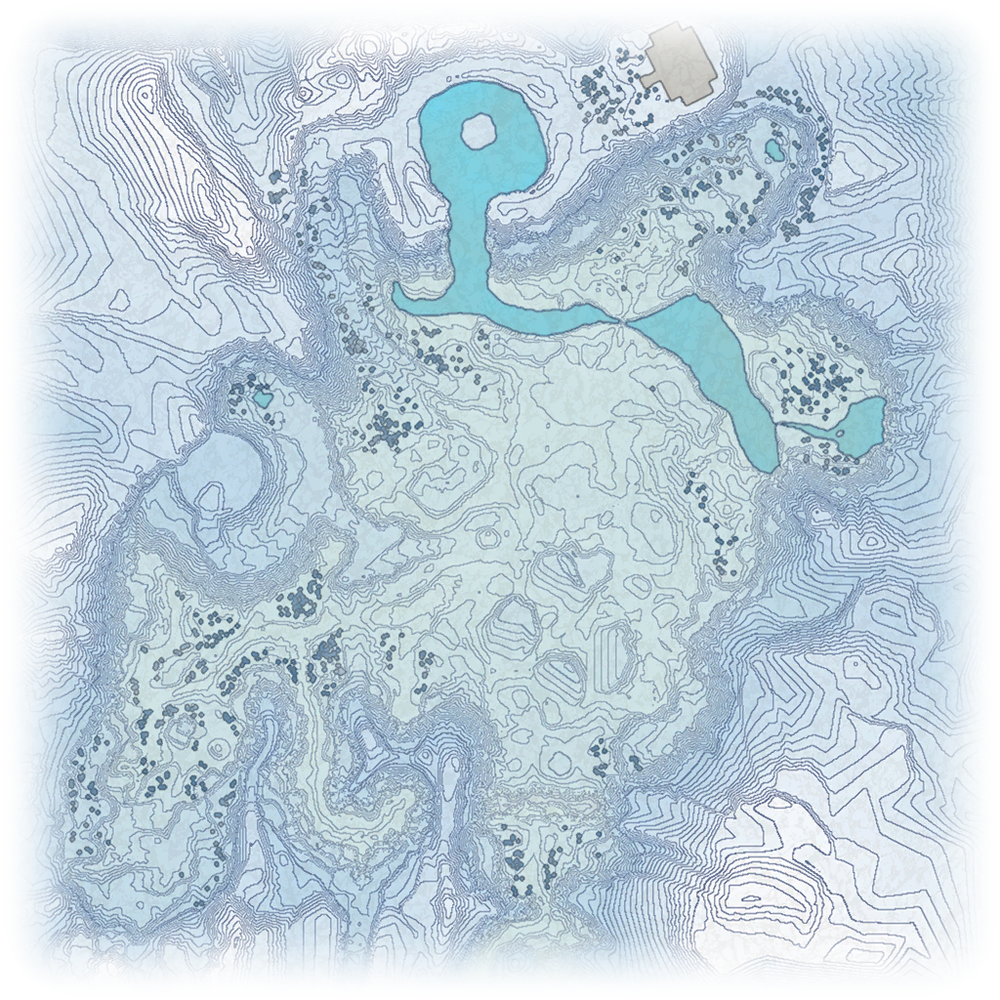

Snowpoint Temple Spawns:
Hover over an icon to see spawn info for the filters selected.
Click an icon to see all spawn info for that spawn point.
Click the plus icon in the upper left to toggle a larger version of the image. The filters will appear below the map.